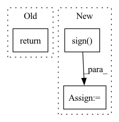

Pattern ID :14720

Before Change
)
grad_input, grad_weight, grad_P1, grad_P2, grad_bias = outputs
return grad_input, grad_weight, grad_P1, grad_P2, grad_bias, None, None, None, None, None
After Change
)
if ctx.sign_grad :
grad_P1 = grad_P1.sign()
grad_P2 = grad_P2.sign()
grad_input, grad_weight, grad_P1, grad_P2, grad_bias = outputs
return grad_input, grad_weight, grad_P1, grad_P2, grad_bias, None, None, None, None, None, None
In pattern: SUPERPATTERN
Frequency: 3
Non-data size: 3
Instances
Fragment ID: 48476523
Project Name: k-h-ismail/dilated-convolution-with-learnable-spacings-pytorch
Commit Name: e3b4807af9bd38a94e72b7211eda406de38e53ab
Time: 2021-11-06
Author: khalfaoui.ismail@hotmail.com
File Name: DCLS/functions/dcls_functionnal.py
M Class Name: dcls2d_conv
N Class Name: dcls2d_conv
M Method Name: backward(2)
N Method Name: backward(2)
M Parent Class: torch.autograd.Function
N Parent Class: torch.autograd.Function
M File Name: DCLS/functions/dcls_functionnal.py
N File Name: DCLS/functions/dcls_functionnal.py
M Start Line: 64
M End Line: 74
N Start Line: 64
N End Line: 77
'>
Before Change
Returns:
torch.Tensor: sign of tensor x
return SteHeavisideFunction.apply(x, self.gradient_cancelation_threshold) // type: ignore
After Change
Returns:
torch.Tensor: sign of tensor x
sign_tensor = torch.sign(x)
sign_tensor[sign_tensor < 0] = 0
return sign_tensor
'>
Fragment ID: 48476525
Project Name: hpi-xnor/bitorch
Commit Name: 83798afb7f0d88d3105fc83fec8aaccc68ebf181
Time: 2021-10-08
Author: overkill98@web.de
File Name: bitorch/quantizations/steheaviside.py
M Class Name: SteHeaviside
N Class Name: SteHeaviside
M Method Name: quantize(2)
N Method Name: quantize(2)
M Parent Class: Quantization
N Parent Class: Quantization
M File Name: bitorch/quantizations/steheaviside.py
N File Name: bitorch/quantizations/steheaviside.py
M Start Line: 59
M End Line: 59
N Start Line: 20
N End Line: 22
'>
Before Change
Returns:
torch.Tensor: sign of tensor x
return SignFunction.apply(x, self.gradient_cancelation_threshold)
After Change
Returns:
torch.Tensor: sign of tensor x
sign_tensor = torch.sign(x)
sign_tensor[sign_tensor == 0] = 1
return sign_tensor
'>
Fragment ID: 48476524
Project Name: hpi-xnor/bitorch
Commit Name: 36ca7eff5b99dfac51ca950e42e5b73259cdf8c6
Time: 2021-10-08
Author: overkill98@web.de
File Name: bitorch/quantizations/sign.py
M Class Name: Sign
N Class Name: Sign
M Method Name: quantize(2)
N Method Name: quantize(2)
M Parent Class: Quantization
N Parent Class: Quantization
M File Name: bitorch/quantizations/sign.py
N File Name: bitorch/quantizations/sign.py
M Start Line: 93
M End Line: 93
N Start Line: 93
N End Line: 95